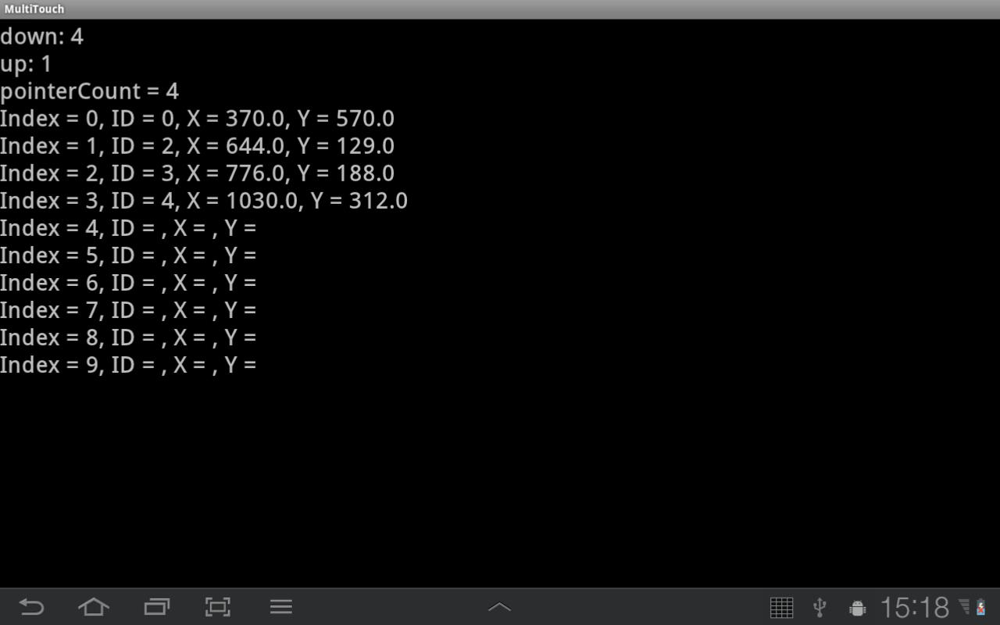

В этом уроке:
- обрабатываем множественные касания
Разобравшись с одиночным касанием на прошлом уроке, приступаем к множественному касанию, которое зовется мультитач.
Система умеет обрабатывать до 10 касаний включительно. Есть мнение, что это как-то связано с количеством пальцев на руках :) При этом учитывайте, что далеко не все устройства поддерживают 10 касаний.
Рассмотрим систему событий для мультитача. К событиям ACTION_DOWN, ACTION_MOVE и ACTION_UP добавляются ACTION_POINTER_DOWN и ACTION_POINTER_UP.
ACTION_DOWN – срабатывает при касании первого пальца
ACTION_POINTER_DOWN – срабатывает при касании каждого последующего пальца
ACTION_MOVE - срабатывает при любом движении
ACTION_ POINTER_UP – срабатывает при отпускании каждого пальца кроме последнего
ACTION_ UP – срабатывает при отпускании последнего пальца
Теперь надо понять, как отличить - для какого именно пальца сработали события ACTION_POINTER_DOWN и ACTION_ POINTER_UP. Для этого используются две системы нумерации – индекс и ID.
Индекс – порядковый номер пальца. Не привязан к пальцу – один палец может иметь разные индексы в течение одного касания.
ID - привязан к пальцу от начала до конца касания.
Чтобы стало понятнее, рассмотрим ситуацию с тремя пальцами. Обозначим их - П1, П2 и П3. Будем касаться ими экрана и смотреть какие индексы и ID система им присваивает.
Касаемся экрана пальцем П1.
Для П1: индекс = 0, ID = 0
Далее касаемся экрана пальцем П2, не отпуская П1. Получим такие данные:
П1: индекс = 0, ID = 0
П2: индекс = 1, ID = 1
Далее касаемся экрана пальцем П3, не отпуская П1 и П2. Получим такие данные:
П1: индекс = 0, ID = 0
П2: индекс = 1, ID = 1
П3: индекс = 2, ID = 2
Теперь отпускаем палец П1. Получаем:
П2: индекс = 0, ID = 1
П3: индекс = 1, ID = 2
Видим, что П2 и П3 сохранили свои ID, а их индексы сместились.
Отпустим палец П2, получим:
П3: индекс = 0, ID = 2
П3 сохранил свой ID, который был изначально. А индекс его сначала был 2, потом 1, теперь 0.
Держим П3. Коснемся экрана пальцем П1, получим:
П1: индекс = 0, ID = 0
П3: индекс = 1, ID = 2
П1 получил первый свободный ID - 0. Индекс его тоже стал 0. А П3 получил индекс 1.
Держим П3 и П1. Коснемся экрана пальцем П2, получим:
П1: индекс = 0, ID = 0
П2: индекс = 1, ID = 1
П3: индекс = 2, ID = 2
П2 получил первый свободный ID - 1. И он сместил П3 в списке индексов.
На этом примере мы видим, что новое касание получает минимальный свободный ID, и индексы всегда перестраиваются так, чтобы ID шли по возрастанию. На этом примере четко видно, что ID привязан к касанию (пока оно длится – ID неизменен). А индексы – это просто номера касаний, но эти номера вовсе не означают порядок касаний. Индексы и ID могут принимать значения от 0 до 9.
Можно считать, что все текущие касания хранятся в некоем массиве. И ID - это их идентификаторы, а индексы - индексы этого массива касаний.
Вернемся к событиям. События UP и DOWN содержат в себе индекс касания. По этому индексу мы всегда можем получить ID. Событие MOVE информации об индексах не дает. Оно просто уведомляет, что происходит какое-то движение.
Напишем приложение, которое будет выводить на экран индекс последнего прикоснувшегося пальца, индекс последнего отпущенного пальца и всю таблицу индексов, ID и координат касаний.
Создадим проект:
Project name: P1031_MultiTouch
Build Target: Android 4.0
Application name: MultiTouch
Package name: ru.startandroid.develop.p1031multitouch
Create Activity: MainActivity
strings.xml и main.xml нам снова не понадобятся, их не трогаем.
Кодим MainActivity.java:
package ru.startandroid.develop.p1031multitouch;
import android.app.Activity;
import android.os.Bundle;
import android.view.MotionEvent;
import android.view.View;
import android.view.View.OnTouchListener;
import android.widget.TextView;
public class MainActivity extends Activity implements OnTouchListener {
StringBuilder sb = new StringBuilder();
TextView tv;
int upPI = 0;
int downPI = 0;
boolean inTouch = false;
String result = "";
/** Called when the activity is first created. */
@Override
public void onCreate(Bundle savedInstanceState) {
super.onCreate(savedInstanceState);
tv = new TextView(this);
tv.setTextSize(30);
tv.setOnTouchListener(this);
setContentView(tv);
}
@Override
public boolean onTouch(View view, MotionEvent event) {
// событие
int actionMask = event.getActionMasked();
// индекс касания
int pointerIndex = event.getActionIndex();
// число касаний
int pointerCount = event.getPointerCount();
switch (actionMask) {
case MotionEvent.ACTION_DOWN: // первое касание
inTouch = true;
case MotionEvent.ACTION_POINTER_DOWN: // последующие касания
downPI = pointerIndex;
break;
case MotionEvent.ACTION_UP: // прерывание последнего касания
inTouch = false;
sb.setLength(0);
case MotionEvent.ACTION_POINTER_UP: // прерывания касаний
upPI = pointerIndex;
break;
case MotionEvent.ACTION_MOVE: // движение
sb.setLength(0);
for (int i = 0; i < 10; i++) {
sb.append("Index = " + i);
if (i < pointerCount) {
sb.append(", ID = " + event.getPointerId(i));
sb.append(", X = " + event.getX(i));
sb.append(", Y = " + event.getY(i));
} else {
sb.append(", ID = ");
sb.append(", X = ");
sb.append(", Y = ");
}
sb.append("\r\n");
}
break;
}
result = "down: " + downPI + "\n" + "up: " + upPI + "\n";
if (inTouch) {
result += "pointerCount = " + pointerCount + "\n" + sb.toString();
}
tv.setText(result);
return true;
}
}В onCreate мы создаем TextView, присваиваем обработчик – текущее Activity, и помещаем в Activity.
Разбираемся с onTouch. Если для одного касания мы использовали метод getAction, чтобы понять какое событие произошло, то с мультитачем надо использовать getActionMasked. Индекс касания определяется методом getActionIndex. Кол-во текущих касаний – getPointerCount.
Если событие - ACTION_DOWN, значит мы получили первое касание. Ставим метку inTouch = true. Она для нас будет означать, что есть касания. Обратите внимание, что в этой ветке case мы не ставим break – следующая case-ветка (ACTION_POINTER_DOWN) также выполнится при ACTION_DOWN.
Если событие ACTION_POINTER_DOWN (или ACTION_DOWN), то в переменную downPI помещаем индекс касания. Это будет индекс последнего прикоснувшегося пальца.
Если событие - ACTION_UP, значит последнее касание прервано и экрана больше ничего не касается. Ставим inTouch = false, т.е. отсутствие касаний. Очищаем StringBuilder, который содержит информацию о движениях.
Если событие - ACTION_POINTER_UP (или ACTION_UP), то в переменную upPI помещаем индекс касания. Это будет индекс последнего прерванного касания. Т.е. когда мы одно за другим прерываем касания, эта переменная будет содержать один за другим индексы последнего из прерванных.
Если событие ACTION_MOVE – мы перебираем все существующие индексы. С помощью pointerCount определяем, какие из них сейчас задействованы и содержат информацию о касаниях. Для них мы пишем номер индекса, ID (метод getPointerId) и координаты (getX и getY). Для незадействованных пишем только номер индекса. Пишем мы это все в StringBuilder.
Далее при любом событии формируем result, пишем туда индекс последнего касания и последнего завершенного касания. Если в данный момент есть касание (inTouch), то добавляем в результат содержимое StringBuilder с подробной инфой о всех касаниях. И выводим result в TextView.
Все сохраним и запустим. На эмуляторе я не знаю способов добиться мультитача, поэтому я тестирую на планшете. Скрин с него.

Я коснулся экрана 5-ю пальцами (последовательно от большого до мизинца, ID от 0 до 5) и потом один (указательный, ID = 1) убрал с экрана.
down показывает, что последний прикоснувшийся палец был с индексом 4
up показывает, что последний убранный с экрана палец был с индексом 1
pointerCount показывает количество действующих касаний
И строки по индексам показывают подробную информацию о касаниях.
Методы getActionMasked и getActionIndex доступны только с API Level 8.
Для более ранних версий (с API Level 5) используется такой способ получения типа события и индекса:
// событие
actionMask = event.getAction() & MotionEvent.ACTION_MASK;
// индекс касания
pointerIndex = (event.getAction() & MotionEvent.ACTION_POINTER_ID_MASK) >> MotionEvent.ACTION_POINTER_ID_SHIFT;Это битовые операции. В принципе, в нашем случае вовсе необязательно понимать, что они делают. Но для общего развития имеет смысл с битовыми операциями познакомиться. Тут можно немного почитать об этом.